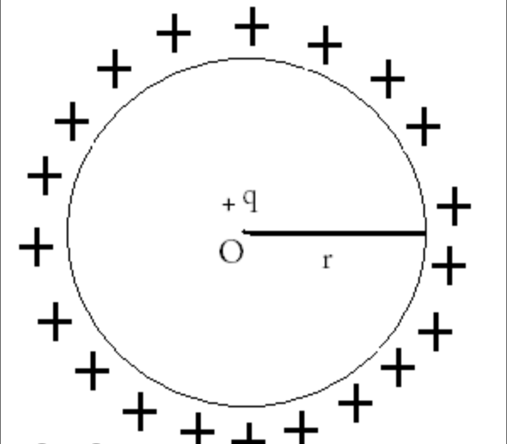
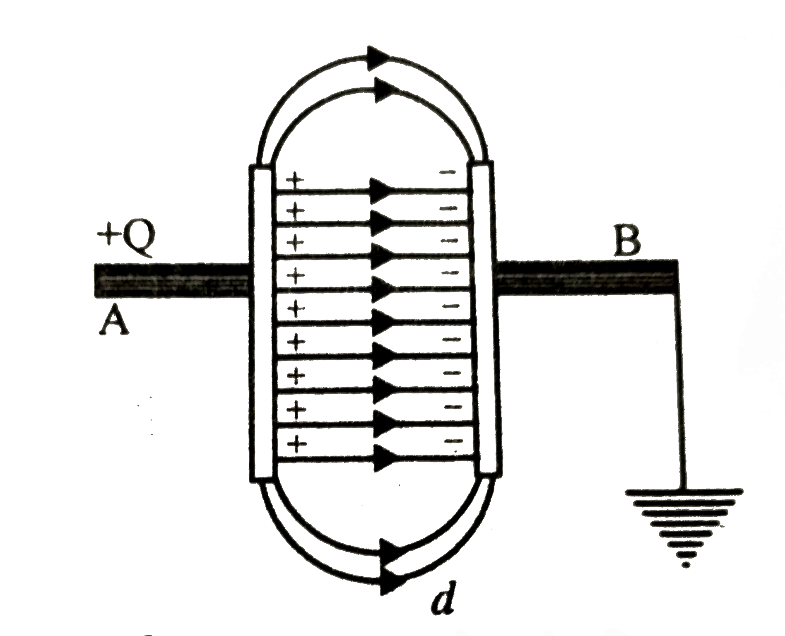
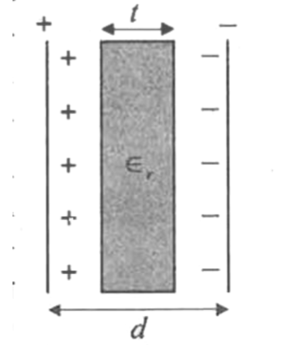
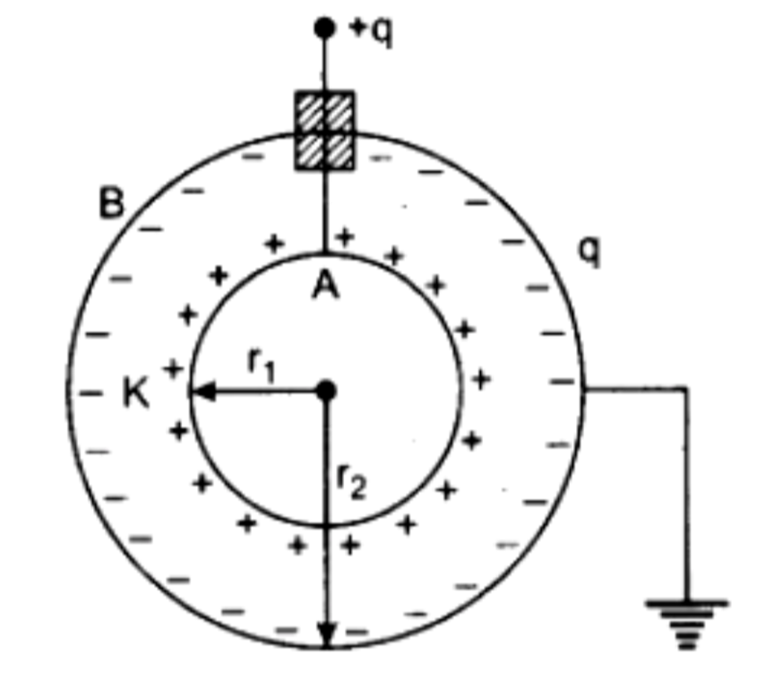
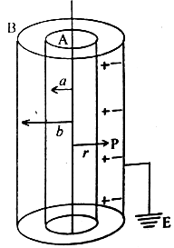
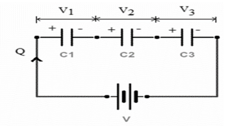
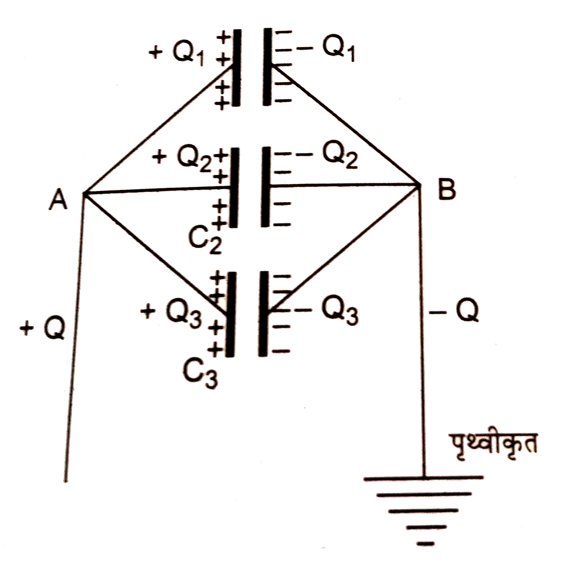
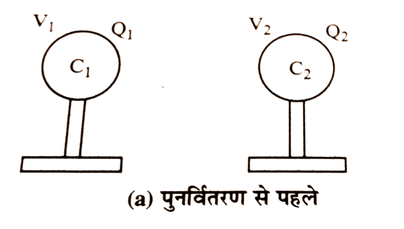
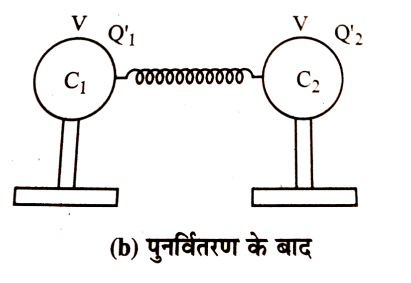

Q. What do you understand by the Capacity of a Conductor?
The charge given to a conductor is directly proportional to its potential.
If a charge \(Q\) is given to a conductor and its potential becomes \(V\), then—
$$
Q \propto V
$$
$$
Q = CV
$$
Where \(C\) is a constant, called the capacity (capacitance) of the conductor.
The SI unit of capacitance is coulomb per volt, which is called the farad.
Q. What do you understand by One Farad?
Farad is the SI unit of capacitance.
If the potential of a conductor increases by 1 volt when it is given a charge of 1 coulomb, then its capacitance is called one farad.
$$
1\,F=\frac{1\,C}{1\,V}
$$
Q. What are the factors affecting the capacitance of a conductor? How do they affect it?
The capacitance of a conductor depends upon the following factors—
1. Dependence on the size of the conductor –
If the size of the conductor is increased, its potential decreases and therefore its capacitance increases.
2. Dependence on the presence of other conductors –
When an uncharged conductor is brought near a charged conductor, its potential decreases and hence its capacitance increases.
3. Dependence on the nature of the medium –
If a dielectric medium is present around the conductor, its potential decreases, thereby increasing its capacitance.
Q. Prove that the capacitance of an isolated spherical conductor is directly proportional to its radius. Or, derive the expression for the capacitance of a spherical conductor.

Consider an isolated spherical conductor of radius \(r\). Let it be given a charge \(+Q\). The charge is uniformly distributed over its surface; therefore, the entire surface is an equipotential surface.
In this case, the whole charge may be assumed to be concentrated at the centre of the sphere.
Hence, the potential at the surface of the sphere is—
Therefore, the capacitance of an isolated spherical conductor is directly proportional to its radius.
Q. Is a spherical conductor of capacitance 1 farad possible?
No, an isolated spherical conductor having a capacitance of 1 farad is not practically possible.
Because the capacitance of a spherical conductor is given by—
$$
C = 4 \pi \varepsilon_0 R
$$
Therefore, the radius is—
$$
R = \frac{C}{4 \pi \varepsilon_0}
$$
If \(C = 1\,F\) and \(\frac{1}{4\pi\varepsilon_0}=9\times10^9\), then—
$$
R = 9 \times 10^9 \, m
$$
This radius is extremely large (much greater than the size of the Earth). Therefore, an isolated spherical conductor having a capacitance of 1 farad is not practically possible.
Q. What is a Condenser (Capacitor)? Explain its principle.
A condenser (capacitor) is a device used to store electric charge.
It consists of two conductors placed close to each other, separated by air or a dielectric medium.
When one conductor is charged and the other conductor is connected to the earth, the charge storage capacity increases due to electrostatic induction.
Principle:
The principle of a condenser is that the capacitance of a conductor increases in the presence of another conductor connected to the earth or placed nearby because its potential decreases while it can hold more charge.
That is—
$$
Q \propto V \quad \Rightarrow \quad Q = CV
$$
Where \(C\) is a constant called the capacitance.
Q. Describe the construction of a parallel plate capacitor and derive an expression for its capacitance.

Construction —
It consists of two parallel metallic plates X and Y placed close to each other. The space between the plates is filled with air or a dielectric medium. Plate X is given a charge while plate Y is connected to the earth.
Expression for Capacitance —
Consider a parallel plate capacitor whose plates have area \(A\) and are separated by a distance \(d\). A dielectric medium of dielectric constant \(K\) is filled between the plates. Plate X is given a charge \(Q\) and plate Y is connected to the earth.
Due to electrostatic induction, a charge \(-Q\) appears on the inner surface of plate Y, while the \(+Q\) charge on its outer surface flows to the earth. Therefore, the surface charge density on each plate is
$$
\sigma=\frac{Q}{A}
$$
Electric field intensity due to plate X at point P is
$$
E_x=\frac{\sigma}{2\varepsilon_0K}
$$
(Towards plate Y)
Similarly, due to plate Y,
$$
E_y=\frac{\sigma}{2\varepsilon_0K}
$$
(Towards plate Y)
Since both electric fields are in the same direction, the resultant electric field is
$$
E=E_x+E_y
$$
$$
E=\frac{\sigma}{2\varepsilon_0K}+\frac{\sigma}{2\varepsilon_0K}
$$
$$
E=\frac{2\sigma}{2\varepsilon_0K}
$$
$$
E=\frac{\sigma}{\varepsilon_0K}
$$
Therefore, the potential difference between the plates is
$$
V=E\times d
$$
$$
V=\frac{\sigma}{\varepsilon_0K}\times d
$$
$$
V=\frac{Q}{\varepsilon_0KA}\times d
$$
Hence, the capacitance is
$$
C=\frac{Q}{V}
$$
$$
C=\frac{Q}{\left(\frac{Q}{\varepsilon_0KA}\times d\right)}
$$
$$
C=\frac{\varepsilon_0KA}{d}
$$
Q. How can the capacitance of a parallel plate capacitor be increased?
The capacitance of a parallel plate capacitor is given by
$$
C=\frac{\varepsilon_0KA}{d}
$$
Therefore, its capacitance depends upon the following factors—
1. Area of the plates —
Since \(C \propto A\), the capacitance increases if the area of the plates is increased.
2. Dielectric constant of the medium —
Since \(C \propto K\), the capacitance increases if a medium having a higher dielectric constant is placed between the plates.
3. Distance between the plates —
Since \(C \propto \frac{1}{d}\), the capacitance increases if the distance between the plates is decreased.
Q. Derive the expression for the capacitance of a parallel plate capacitor partially filled with a dielectric medium.

Consider a parallel plate capacitor having plate area \(A\) and separation \(d\). A dielectric slab of thickness \(t\) and dielectric constant \(K\) is placed between the plates. Plate X is given a charge \(Q\) and plate Y is connected to the earth.
Due to electrostatic induction, a charge \(-Q\) appears on the inner surface of plate Y, while the charge on its outer surface flows to the earth.
Therefore, the surface charge density on each plate is
$$
\sigma=\frac{Q}{A}
$$
The electric field intensity in the air region is
$$
E_a=\frac{\sigma}{\varepsilon_0}
$$
The electric field intensity inside the dielectric medium is
$$
E_m=\frac{\sigma}{\varepsilon_0K}
$$
Hence, the potential difference between the two plates is
$$
V=E_a(d-t)+E_m(t)
$$
$$
V=\frac{\sigma}{\varepsilon_0}(d-t)+\frac{\sigma}{\varepsilon_0K}(t)
$$
$$
V=\frac{\sigma}{\varepsilon_0}\left(d-t+\frac{t}{K}\right)
$$
$$
V=\frac{Q}{\varepsilon_0A}\left(d-t+\frac{t}{K}\right)
$$
Therefore, the capacitance of the capacitor is
$$
C=\frac{Q}{V}
$$
$$
C=\frac{Q}{\frac{Q}{\varepsilon_0A}\left(d-t+\frac{t}{K}\right)}
$$
$$
C=\frac{\varepsilon_0A}{\left(d-t+\frac{t}{K}\right)}
$$
Q. Describe the construction of a spherical capacitor and derive an expression for its capacitance.

Construction —
It consists of two concentric hollow metallic spheres X and Y which do not touch each other. The space between them is filled with air or a dielectric medium. The outer sphere Y is connected to the earth, while the inner sphere X is connected to a metallic rod H.
Let —
The radius of the inner sphere X be \(a\) and that of the outer sphere Y be \(b\). A dielectric medium of dielectric constant \(K\) is present between the two spheres.
The inner sphere X is given a charge \(Q\), while the outer sphere Y is connected to the earth.
Due to electrostatic induction, a charge \(-Q\) appears on the inner surface of the outer sphere Y, while the charge on its outer surface flows to the earth.
Now, the potential of the inner sphere X is
$$
V_1=\frac{1}{4\pi\varepsilon_0K}\cdot\frac{Q}{a}-\frac{1}{4\pi\varepsilon_0K}\cdot\frac{Q}{b}
$$
$$
V_1=\frac{1}{4\pi\varepsilon_0K}\left(\frac{Q}{a}-\frac{Q}{b}\right)
$$
$$
V_1=\frac{Q}{4\pi\varepsilon_0K}\left(\frac{b-a}{ab}\right)
$$
Since the outer sphere Y is connected to the earth,
$$
V_2=0
$$
Therefore, the potential difference is
$$
V=V_1-V_2
$$
$$
V=\frac{Q}{4\pi\varepsilon_0K}\left(\frac{b-a}{ab}\right)
$$
Hence, the capacitance of the spherical capacitor is
$$
C=\frac{Q}{V}
$$
$$
C=4\pi\varepsilon_0K\left(\frac{ab}{b-a}\right)
$$
Q. What are the factors affecting the capacitance of a spherical capacitor? How can its capacitance be increased?
The capacitance of a spherical capacitor is given by
$$
C=4\pi\varepsilon_0K\left(\frac{ab}{b-a}\right)
$$
Therefore, its capacitance depends upon the following factors—
1. Radius of both spheres —
The greater the radii \(a\) and \(b\) of the two spheres, the greater will be the capacitance of the capacitor.
2. Difference between the radii —
The smaller the difference \((b-a)\) between the radii of the two spheres, the greater will be the capacitance.
3. Dielectric medium —
The greater the dielectric constant \(K\) of the medium between the spheres, the greater will be the capacitance of the capacitor.
Q. Derive the expression for the capacitance of a Cylindrical Condenser.

The construction of a cylindrical condenser is shown in the figure. X and Y are two coaxial cylinders which do not touch each other. The space between them is filled with air or a dielectric medium. Cylinder X is given a positive charge, while cylinder Y is connected to the earth.
Expression for capacitance — Let the linear charge density on cylinder X be \( \lambda \), and let the radii of cylinders X and Y be \(a\) and \(b\), respectively, where \(b>a\).
∴ The electric field intensity at a distance \(r\) due to cylinder X in the medium between the cylinders is—
Therefore, the following points should be considered to increase the capacitance of a cylindrical condenser—
1. The length of both cylinders should be increased.
2. The value of \(b/a\) should be small, i.e., the radii of the two cylinders should be nearly equal.
3. The medium between the two cylinders should have a high dielectric constant.
Q. What do you understand by the Series Combination of Capacitors? Derive the expression for equivalent capacitance in series combination.
If the second plate of the first capacitor is connected to the first plate of the second capacitor, the second plate of the second capacitor is connected to the first plate of the third capacitor, the first plate of the first capacitor is charged, and the second plate of the last capacitor is connected to the earth, then this arrangement is called the series combination of capacitors. In this arrangement, the charge on each capacitor remains the same.

Derivation — Let three capacitors of capacitances \(C_1\), \(C_2\), and \(C_3\) be connected in series across a source of potential difference \(V\). The first plate of the first capacitor is given a charge \(+Q\), and the second plate of the last capacitor is connected to the earth. Therefore, charges \(+Q\) and \(-Q\) appear on the plates of each capacitor.
Let the potential differences across the three capacitors be \(V_1\), \(V_2\), and \(V_3\), respectively.
Then —
\[
V_1=\frac{Q}{C_1}
\]
\[
V_2=\frac{Q}{C_2}
\]
\[
V_3=\frac{Q}{C_3}
\]
If the equivalent capacitance is \(C\), then the total potential difference is —
Hence, the equivalent capacitance of capacitors connected in series is equal to the reciprocal of the sum of the reciprocals of their individual capacitances.
Q. What do you understand by the Parallel Combination of Capacitors? Derive the expression for equivalent capacitance in parallel combination.
In this combination, one plate of each capacitor is connected to point A and charged, while the other plate is connected to point B and then to the earth. Thus, the potential difference across each capacitor remains the same.

Derivation — Let three capacitors of capacitances \(C_1\), \(C_2\), and \(C_3\) be connected in parallel across a source of potential difference \(V\). Therefore, the potential difference across each capacitor is the same, i.e., \(V\).
If a total charge \(+Q\) is supplied to point A, it gets divided into three parts \(Q_1\), \(Q_2\), and \(Q_3\).
Then—
\[
Q_1=C_1V
\]
\[
Q_2=C_2V
\]
\[
Q_3=C_3V
\]
If the equivalent capacitance is \(C\), then—
\[
Q=CV
\]
But in parallel combination—
\[
CV=C_1V+C_2V+C_3V
\]
\[
C=C_1+C_2+C_3
\]
Hence, it is clear that the equivalent capacitance in parallel combination is equal to the sum of the capacitances of all the capacitors.
Q. What do you understand by the Potential Energy of a Conductor? Derive its expression.
The work done in charging a conductor is called the potential energy of the conductor. It is denoted by \(U\).
Derivation — Suppose a conductor is to be given a total charge \(Q\). Initially, when the conductor has no charge, its potential is zero. As the charge is supplied, its potential gradually increases to \(V\).
Therefore, the average potential of the conductor is—
Q. Prove that when two charged conductors are connected together, the charge is distributed in the ratio of their capacitances.

Let A and B be two conductors having capacitances \(C_1\) and \(C_2\), respectively. When they are given charges separately, their potentials become \(V_1\) and \(V_2\), respectively.

Now, if these two conductors are connected by a thin wire of negligible capacitance, charge flows from the conductor at higher potential to the conductor at lower potential until both attain the same common potential. Let this common potential be \(V\).
After connection—
$$
Q_1' = C_1V \quad ...(1)
$$
$$
Q_2' = C_2V \quad ...(2)
$$
Dividing equation (1) by equation (2), we get—
$$
\frac{Q_1'}{Q_2'}=\frac{C_1V}{C_2V}
$$
$$
\frac{Q_1'}{Q_2'}=\frac{C_1}{C_2}
$$
Hence, it is proved that when two charged conductors are connected together, the charge is distributed in the ratio of their capacitances.
Q. Prove that there is a Loss of Energy when Two Charged Conductors are Connected.
Let A and B be two conductors having capacitances \(C_1\) and \(C_2\), respectively. When they are charged separately, their potentials become \(V_1\) and \(V_2\), respectively.
Hence, the initial potential energy of the two conductors is—
Now, if both conductors are connected by a thin wire, charge flows from the higher potential to the lower potential until both attain a common potential \(V\).
$$
\boxed{
\Delta U
=
\frac{C_1C_2(V_1-V_2)^2}
{2(C_1+C_2)}
}
$$
Since all the quantities are positive, therefore \(\Delta U>0\). Hence, it is proved that there is a loss of energy when two charged conductors are connected together.